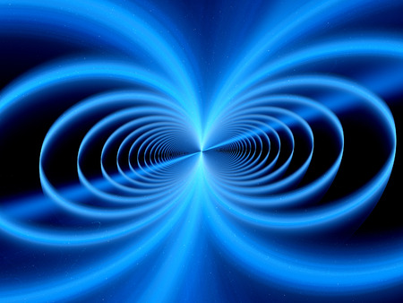

Classes on Electromagnetism and Optics
Physics 5B: Introductory Electromagnetism, Waves, and Optics
Description in the Berkeley Class Schedule: Electric fields and potential, circuits, magnetism and induction. Introduction to optics including light propagation, reflection, refraction and interference. Intended for students with an interest in pursuing a major in physics, astrophysics, engineering physics, or related disciplines. Physics Honors series.
This is the work I have done for this class:
- Homework 1
- Homework 2
- Homework 3
- Homework 4
- Homework 6
- Homework 7
- Homework 8
- Homework 9
- Homework 10
- Homework 11
- Homework 12
Physics 5BL: Introduction to Experimental Physics I
Description in the Berkeley Class Schedule: Part one of a two-semester laboratory sequence to introduce students to experimental physics and prepare them for research. Covers a variety of modern and historical experiments, emphasizing data analysis, clear scientific communication, and development of skills on modern equipment. Physics Honors series.
This is the work I have done for this class:
- Worksheet 1
- Worksheet 2
- Worksheet 3
- Worksheet 4
- Worksheet 5
- Worksheet 6
- Lab Report 1
- Lab Report 2
- Lab Report 3
- Lab Report 4
- Lab Report 5
- Lab Report 6
- Capstone Project
Physics 5CL: Introduction to Experimental Physics II
Description in the Berkeley Class Schedule: Part two of a two-semester laboratory sequence to introduce students to experimental physics and prepare them for research. Covers a variety of modern and historical experiments, emphasizing iterative experimental design, clear scientific communication, and development of skills on modern equipment. Physics Honors series.
I haven't taken this class yet, but when I do so my work will be uploaded here.
Physics 110A: Electromagnetism and Optics
Description in the Berkeley Class Schedule: Part I. A course emphasizing electromagnetic theory and applications; charges and currents; electric and magnetic fields; dielectric, conducting, and magnetic media; relativity, Maxwell equations. Wave propagation in media, radiation and scattering, Fourier optics, interference and diffraction, ray optics and applications.
I haven't taken this class yet, but when I do so my work will be uploaded here.
Physics 209: Classical Electromagnetism
Description in the Berkeley Class Schedule: Maxwell's equations, gauge transformations and tensors. Complete development of special relativity, with applications. Plane waves in material media, polarization, Fresnel equations, attenuation, and dispersion. Wave equation with sources, retarded solution for potentials, and fields. Cartesian and spherical multipole expansions, vector spherical harmonics, examples of radiating systems, diffraction, and optical theorem. Fields of charges in arbitrary motion, radiated power, relativistic (synchrotron) radiation, and radiation in collisions.
I haven't taken this class yet, but when I do so my work will be uploaded here.